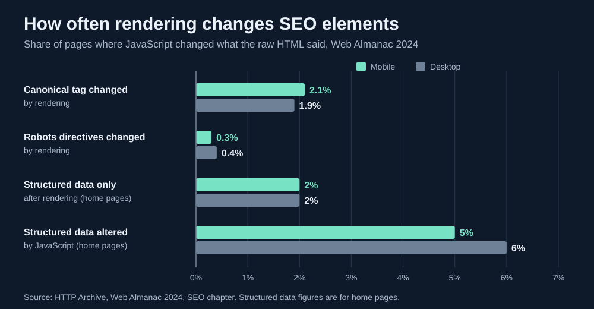

Key takeaways
- Google queues every HTML page that returns a 200 for rendering, unless the initial HTML says noindex. In the most detailed public measurement, every indexable page was rendered, half of them within 10 seconds.
- The renderer does not click, scroll, accept permission prompts or keep cookies between pages. Content that depends on any of these is missing from the rendered HTML.
- Google indexes the rendered HTML but reads status codes, noindex and canonicals before rendering as well. Conflicts between the two versions are where JavaScript sites lose pages.
- Split tests show traffic gains when JavaScript hid content or links from Google, and no change when Google already saw them. Outside Google, the major AI crawlers measured in 2024 did not render JavaScript at all.
The question has changed
For years, JavaScript SEO asked one question: can Google run the code at all? Google’s early workaround, the AJAX crawling scheme, relied on special URL fragments, and Google deprecated it in 2015. [1] In May 2019, Googlebot moved to “the latest Chromium rendering engine (74 at the time of this post)”, gained support for more than 1,000 new features, and Google said it would update the engine regularly from then on. [2] Its documentation now says it runs JavaScript with an evergreen version of Chromium. [3]
In March 2026, Google removed the section of its JavaScript guide that advised testing pages with JavaScript turned off. [4] The changelog gave the reason: “Google Search has been rendering JavaScript for multiple years now,” so using JavaScript to load content is not “making it harder for Google Search”. [5]
That settles the old question for Google. It leaves three newer ones: what Google sees when it runs a page, which signals it reads before running it, and what happens on search systems that are not Google. The evidence on each is better than the folklore, and it points to a different set of failures than the ones JavaScript SEO is usually blamed for.
What Google renders, and how quickly
Google processes JavaScript pages in three phases: crawling, rendering and indexing. Googlebot fetches a URL, reads the HTML response and “queues all pages with a 200 HTTP status code for rendering”, unless a robots meta tag or header says not to index the page. A page may stay in that queue “for a few seconds, but it can take longer than that”. Google then runs the page in Chromium and uses the rendered HTML to find links and to index the content. [3]
Two gates sit in front of the queue. Since December 2025, the documentation says that for pages with a non-200 status code, such as 404 error pages, “rendering might be skipped”. And when Google finds noindex in the original HTML, “it may skip rendering and JavaScript execution”. [3] The changelog entry for that change is candid: Google may be able to render such a page, but “the behavior of this is not well defined and might change”. [5]
![Diagram of the path a JavaScript page takes from crawl to ranking in Google Search, with five points where it can drop out. Gate 1, status code: pages with a non-200 status may not be rendered. Gate 2, noindex in the initial HTML: rendering and JavaScript may be skipped, so JavaScript that removes the tag may never run. Step 3, render queue: in Vercel and MERJ’s 2024 measurement the median wait was 10 seconds and the 99th percentile about 18 hours. Step 4, the Web Rendering Service runs the page once: no clicks, scrolling, permission prompts or saved cookies, HTTP requests only, 2MB per resource. Step 5, Google reads the rendered HTML, canonicalises before and after rendering, decides whether to index, and ranks the indexed page.](javascript-rendering-pipeline-mobile.svg)
Figure 1. How Google handles a JavaScript page, and where pages drop out before ranking. Sources: [1][3][5][6][7].
The best public measurement of what happens next comes from Vercel and the consultancy MERJ. They tracked more than 100,000 Googlebot fetches on nextjs.org in April 2024 and matched over 37,000 of them to beacons that fired when rendering finished. Every indexable HTML page that returned a 200 was fully rendered, including content streamed with React Server Components, and content loaded from APIs was indexed. Pages with noindex in the initial HTML were not rendered, and neither were pages that returned error codes. [6] The median delay between crawl and render was 10 seconds. The long tail, and why it is longer for parameterised URLs, is covered in the crawl budget study. The data comes from one site in one month, and Vercel sells hosting for the framework it tested.
Google describes the tail differently. Responding to a claim that rendering can take weeks, Martin Splitt of Google said in 2025 that “the 99th percentile is within minutes”. [8] Vercel’s 99th percentile was about 18 hours. [6] The two may measure different intervals, and neither publishes enough detail to settle the difference. Both reject the idea of a multi-week rendering backlog.
A second piece of folklore is a five-second rendering limit. It has circulated since Splitt said in 2019 that the median time to render was five seconds, [9] which was a median, not a cut-off. In July 2026, Dave Smart tested it with a page that made two API calls, each delayed by three to six seconds, next to a timer that ran for five. The delayed content still appeared in Google’s render, and the API calls were reported as taking a fraction of a second. Smart’s explanation is that the Web Rendering Service controls its own virtual clock. A page that kept making requests was eventually cut off after about 30 to 54 seconds, which he calls variable. His conclusion is that the renderer’s “patience is not infinite, but it is more than 5 seconds”. [10] It is one tester’s experiment using Google’s own testing tools, and the virtual clock is his inference rather than Google’s documentation.
What the renderer does not do
Rendering is not browsing. Google’s lazy-loading documentation says it plainly: “Google Search does not interact with your page.” [11] The renderer loads a page, runs its scripts and keeps the result. It does not scroll, click or type. Google documents most of the consequences.
| Behaviour | What Google’s renderer does |
|---|---|
| Clicks, typing, scroll events | None. Content that loads only after a click or a scroll event is not rendered. |
| Viewport and lazy loading | Renders with a tall viewport. Content loaded when it enters the viewport is picked up. |
| Permission prompts | Declined, including camera and location requests. |
| Cookies and storage | Cookies, local storage and session storage are cleared across page loads. |
| Connections and features | HTTP requests only, without WebSockets or WebRTC. WebGL is not supported. |
| JavaScript and CSS files | Cached aggressively; caching headers may be ignored. |
| Shadow DOM | Flattened together with the light DOM. Only content in the rendered HTML counts. |
| Links and fragments | Links are found only in <a> elements with an href. Fragments do not create separate pages. |
| File size | Processes the first 2MB of each fetched resource. |
Table 1. Documented behaviour of Google’s Web Rendering Service. Sources: [1][3][7][11][12][13].
Three of these cause most of the damage. The first is interaction. Content that appears only when a user clicks “load more”, opens a tab that fetches data, or scrolls far enough to fire an event is not in the rendered HTML. John Mueller said in 2021 that Googlebot tends not to trigger scroll events or clicks and instead renders with “a super tall viewport”, so content loaded with IntersectionObserver as it enters the viewport is likely to be picked up. [12] Vercel’s study made the same observation about tabs: Google generally does not click them. [6] The line runs between content that is in the DOM but hidden, which is rendered, and content that is fetched on interaction, which is not.
The second is state. The renderer does not keep state between page loads, so cookies, local storage and session storage start empty every time. It also declines permission requests. [1] Splitt has described sites that ask for the visitor’s location: “Googlebot does not say yes on that popup. It says no on all these requests.” [13] A page that needs a consent choice, a saved preference or a location to show its main content shows Google its fallback instead.
The third is links. Google discovers links only from <a> elements with an href attribute. Injecting them with JavaScript is fine. Buttons with click handlers and URL fragments that swap content are not links. [1][3] The same logic applies to infinite scroll, which Google can follow only when each chunk has its own URL and the chunks link to each other. [11]
Size and caching add quieter failures. Each resource the renderer fetches has its own 2MB limit, and bytes past it are not rendered or indexed. [7] Google caches JavaScript and CSS aggressively and may ignore caching headers, so a release that changes code without changing file names can be rendered with old files. Google’s answer is fingerprinting: putting a content hash in each file name. [1]
What Google indexes: the rendered page, with conditions
Google indexes the rendered HTML. Splitt said so directly in 2025: “A lot of people are still looking at view source. That is not what we use for indexing. We use the rendered HTML.” [13] For content, that ends an old debate. Text injected by JavaScript counts if it is in the rendered HTML.
For signals, the initial HTML still matters, because Google reads some of them before rendering and again after it. Google’s December 2025 documentation changes made this explicit for canonicals: “Canonicalization happens before and after rendering, so it’s important to make the canonical URL as clear as possible.” [5] The recommended place for a canonical is the HTML. If JavaScript sets one, it should match the original, or the original should leave it out. JavaScript “shouldn’t” change it to a different URL. [3] Noindex is stricter. A noindex tag in the initial HTML can stop rendering altogether, so JavaScript written to remove it may never run. Vercel and MERJ saw exactly that: removing noindex on the client did not work. [3][6]
Status codes follow the same logic. Single-page apps often route on the client and return a 200 for every URL, including views that say “not found”. Google treats those as soft 404s. Its suggested fixes are a JavaScript redirect to a URL that returns a real 404, or a noindex tag added to the error view. [1][3] Splitt included the pattern in a 2025 talk on three common JavaScript SEO mistakes. [13]
HTTP Archive’s Web Almanac measures how often raw and rendered HTML disagree across millions of sites. In its 2024 edition, rendering changed the canonical on 2.1% of mobile pages and 1.9% of desktop pages, and changed robots directives on 0.3% and 0.4%. Structured data appeared only after rendering on 2% of home pages, and JavaScript altered existing structured data on 5% of mobile and 6% of desktop home pages. [14] The 2025 edition, based on a July 2025 crawl, found a canonical in the rendered HTML of about 66% of pages, against about 64% in the raw HTML. It called the raw HTML canonical “the most reliable approach”. [15]

Figure 2. Share of pages where rendering changed an SEO element, HTTP Archive Web Almanac 2024. Structured data figures are for home pages. Source: [14].
The percentages are small, but they apply to millions of sites, and they cover exactly the elements Google reads before rendering. A canonical that points one way in the raw HTML and another way after rendering gives Google two answers. Structured data is more forgiving. Google supports JSON-LD generated with JavaScript, though for Product markup it recommends the initial HTML “for best results”. [3][5] What that markup is worth in the first place is the subject of the schema markup study.
Rendering is also not the same as indexing. A rendered page still faces Google’s decisions on quality and duplication. In 2019, Rudzki of the technical SEO agency Onely reported that JavaScript-loaded content was still unindexed on about a quarter of the pages it sampled from popular sites, with delays of hours or days on some sites. [16] The study predates most of the evidence above, does not publish the size of that sample, and its tables are hard to reconcile with its text. It is more useful as a reminder of what to measure than as a current rate. Vercel measured whether pages were rendered on one site. Onely measured whether content was indexed across many. They answer different questions.
Does JavaScript affect rankings?
No Google documentation treats JavaScript as a ranking signal. Ranking works on what indexing stores, and indexing stores the rendered page. If JavaScript changes rankings, it does so through indirect routes: content or links Google never sees, signals that conflict between raw and rendered HTML, and the speed of the page for users.
The strongest evidence comes from controlled SEO split tests, which apply a change to one group of similar pages and compare it with an untouched control group. SearchPilot, a company that sells this kind of testing, has published four tests that changed how JavaScript delivered content or links.
![Chart of four SearchPilot split tests on JavaScript delivery. 2017, retail category pages: product information and links made visible without JavaScript, more than 6% uplift in organic traffic, statistically significant. 2021, ecommerce product pages rebuilt in React with server-side rendering: estimated 13% uplift, attributed to better user experience and speed. 2021, listing site profile pages: main AngularJS content pre-rendered in the HTML, no detectable change. 2021, travel site: internal links moved out of a JavaScript-only tab into the HTML, inconclusive at 95% confidence.](javascript-split-test-results-mobile.svg)
Figure 3. SearchPilot split tests that changed how JavaScript delivered content or links. Vendor-reported; one site per test, and no test publishes its sample size or duration. Sources: [17][18][19][20].
In 2017, on category pages listing products, half the pages were changed so that product information and links were visible without JavaScript. Those pages gained more than 6% in organic traffic, a statistically significant result, even though Google’s own fetch and render tool had shown the original pages correctly. [17] In 2021, product pages on an ecommerce site were rebuilt in React with server-side rendering and gained 13%. The content and meta tags were already in the source before the change, and SearchPilot attributed the gain to better user experience and speed. [18] Pre-rendering the main content of AngularJS profile pages on a listing site produced no detectable change, which SearchPilot read as a sign that Google was already indexing it. [19] Moving a set of internal links out of a JavaScript-only tab on a travel site was inconclusive at 95% confidence. [20]
The tests have clear limits. They are vendor-reported, cover one site each, publish no sample sizes or durations, and the 2017 test predates the evergreen Googlebot. Still, they fit one pattern. Server-side delivery helped when JavaScript stood between Google and the content, and changed little when Google already saw it. SearchPilot credits the React gain to a faster page rather than to rendering, and speed is a smaller ranking lever than its reputation suggests: Core Web Vitals are a modest signal that matters most when relevance is close.
Google’s own position is pragmatic rather than neutral. Splitt has said that “requiring JavaScript is a drawback. It can break. It can cause problems,” and that server-side and client-side rendering are “two tools”, with server or static rendering suited to content sites and client-side rendering to interactive applications. [8] Google’s guide calls server-side rendering or pre-rendering “still a great idea”, because it is faster for users and crawlers and because “not all bots can run JavaScript”. [3]
Beyond Google: crawlers that do not render
Google’s renderer is not the norm. Bing said in 2018 that bingbot “is generally able to render JavaScript”, but that it is “difficult for bingbot to process JavaScript at scale on every page of every website”, and recommended dynamic rendering for sites that rely heavily on it. [21] Google calls dynamic rendering “a workaround and not a recommended solution”. [22] Independent checks are small. In a 2022 test of a single page, Google indexed content loaded by JavaScript within a couple of days, while Bing’s and Yandex’s snippets did not change in the days that followed. [23]
AI crawlers are the larger gap. Vercel’s analysis of its network in late 2024 found that none of the major AI crawlers rendered JavaScript. OpenAI’s and Anthropic’s crawlers fetched JavaScript files but did not run them. [24] Google is again the exception: Splitt said in 2025 that the crawler Gemini uses “also renders”, through the same rendering service as Googlebot. [8][25] On a client-side rendered site, the content Google indexes may not exist at all for the crawlers that feed ChatGPT or Claude. That is part of the retrieval layer described in the SEO vs GEO case study, and in 2026 it is a stronger argument for server-side rendering than anything on Google’s side.
Where JavaScript sites actually lose pages
The evidence points to a short list of failure points, and Google’s ability to run JavaScript is not on it. Pages drop out before rendering when the server returns an error code, or a noindex that JavaScript was supposed to remove. They render incompletely when content needs a click, a scroll event, a permission, a stored state or a WebSocket, or sits beyond 2MB in a single file. They are indexed with the wrong signals when the canonical or robots directives differ between raw and rendered HTML. And they are invisible to crawlers that do not render at all.
Each of these is visible before it costs traffic. Google’s URL Inspection tool shows the rendered HTML, the resources the renderer loaded and its console errors. [1][13] At scale, the useful test is a comparison of the same URLs crawled with and without rendering: status codes, canonicals, robots directives, titles, internal links and word counts side by side. Any field that differs between the two crawls is a candidate failure point. In large migrations, a template change that moves the canonical or the main content into client-side code is one of the easiest regressions to miss, because the page looks the same in a browser.
Conclusion
Google renders JavaScript. It does so for nearly every indexable page, usually within seconds, with a current version of Chromium. The question of whether Google can see JavaScript content now has a short answer: yes, if the content is in the rendered HTML without any interaction, and if the initial HTML does not stop Google first.
What Google indexes is the rendered page, read alongside the signals in the raw HTML. What it ranks is that indexed page, and there is no evidence of a penalty for how the page was built. JavaScript costs rankings when it hides content, links or consistent signals from Google, and the split tests show gains only where that was happening. The larger risk now sits outside Google, with crawlers that never run the code. For pages whose content matters in search, the safest build still sends the important parts in the first response.
Sources
[1] Google Search Central. Fix Search-Related JavaScript Problems. Last updated December 18, 2025. https://developers.google.com/search/docs/crawling-indexing/javascript/fix-search-javascript
[2] Splitt, M. (2019). The New Evergreen Googlebot. Google Search Central Blog, May 7, 2019. https://developers.google.com/search/blog/2019/05/the-new-evergreen-googlebot
[3] Google Search Central. Understand the JavaScript SEO Basics. Last updated March 4, 2026. https://developers.google.com/search/docs/crawling-indexing/javascript/javascript-seo-basics
[4] Southern, M. G. (2026). Google Removes JavaScript SEO Warning, Says It’s Outdated. Search Engine Journal, March 4, 2026. https://www.searchenginejournal.com/google-removes-javascript-seo-warning-says-its-outdated/568829/
[5] Google Search Central. Latest Google Search Documentation Updates. Entries from October 1, 2024 to March 4, 2026. https://developers.google.com/search/updates
[6] Zecchini, G., Moore, A. A., Siddle, R. & Ubl, M. (2024). How Google Handles JavaScript Throughout the Indexing Process. Vercel and MERJ, July 31, 2024. Vendor study; one site, one month. https://vercel.com/blog/how-google-handles-javascript-throughout-the-indexing-process
[7] Illyes, G. (2026). Inside Googlebot: Demystifying Crawling, Fetching, and the Bytes We Process. Google Search Central Blog, March 31, 2026; updated October 29, 2026. https://developers.google.com/search/blog/2026/03/crawler-blog-post
[8] Southern, M. G. (2025). Server-Side vs. Client-Side Rendering: What Google Recommends. Search Engine Journal, May 2, 2025. Reports Martin Splitt in an interview with Kenichi Suzuki. https://www.searchenginejournal.com/server-side-vs-client-side-rendering-what-google-recommends/545946/
[9] Schwartz, B. (2019). Google: Median Time for GoogleBot to Render Is 5 Seconds. Search Engine Roundtable, November 14, 2019. Reports Martin Splitt at Chrome Dev Summit 2019. https://www.seroundtable.com/google-render-5sec-28532.html
[10] Smart, D. (2026). There’s No 5 Second Render Limit in Google, but I Can See Why You Might Think There Is. Tame the Bots, July 23, 2026; updated July 29, 2026. Single-page test using Google’s testing tools. https://tamethebots.com/blog-n-bits/the-5-second-google-render-limit-myth
[11] Google Search Central. Fix Lazy-Loaded Content. Last updated December 10, 2025. https://developers.google.com/search/docs/crawling-indexing/javascript/lazy-loading
[12] Schwartz, B. (2021). Google Tends to Not Watch for Scroll Events or Click to Load More Buttons. Search Engine Roundtable, May 10, 2021. Reports John Mueller. https://www.seroundtable.com/google-scroll-events-or-click-to-load-more-buttons-31387.html
[13] Southern, M. G. (2025). Google’s Martin Splitt Reveals 3 JavaScript SEO Mistakes & Fixes. Search Engine Journal, March 31, 2025. Reports Martin Splitt at SEO for Paws. https://www.searchenginejournal.com/googles-martin-splitt-reveals-3-javascript-seo-mistakes-fixes/543302/
[14] Indigo, J., Smart, D., Araújo, M. & Lewittes, M. (2024). SEO. Web Almanac 2024, HTTP Archive, December 2, 2024; updated June 1, 2025. https://almanac.httparchive.org/en/2024/seo
[15] Chulwuma, A., Green, C. & Brannon, S. (2026). SEO. Web Almanac 2025, HTTP Archive, January 15, 2026; updated June 9, 2026. Based on the July 2025 crawl. https://almanac.httparchive.org/en/2025/seo
[16] Rudzki, T. (2019). JavaScript Indexing Delays Are Still an Issue for Google. Search Engine Journal, November 22, 2019. Author is Head of R&D at Onely; vendor research. https://www.searchenginejournal.com/javascript-indexing-delays-google/335703/
[17] Critchlow, W. (2017). Early Results from Split Testing JavaScript for SEO. SearchPilot, May 24, 2017; updated August 7, 2023. Vendor case study. https://www.searchpilot.com/resources/blog/split-testing-javascript-for-seo
[18] Nemzer, S. (2021). What’s the SEO Impact of Using React on Product Pages? SearchPilot, June 23, 2021. Vendor case study. https://www.searchpilot.com/resources/case-studies/seo-split-test-lessons-react
[19] SearchPilot (2021). Do You Need to Pre-Render AngularJS Content for SEO? SearchPilot, July 5, 2021. Vendor case study. https://www.searchpilot.com/resources/case-studies/seo-split-test-lessons-pre-rendering-angular-js-content
[20] Abidi, R. (2021). SEO A/B Test: Server-Side Rendering Internal Links. SearchPilot, August 19, 2021. Vendor case study. https://www.searchpilot.com/resources/case-studies/server-side-rendering-internal-links
[21] Canel, F. & Dubut, F. (2018). bingbot Series: JavaScript, Dynamic Rendering, and Cloaking. Oh My! Bing Webmaster Blog, October 31, 2018. https://blogs.bing.com/webmaster/october-2018/bingbot-Series-JavaScript,-Dynamic-Rendering,-and-Cloaking-Oh-My
[22] Google Search Central. Dynamic Rendering as a Workaround. Last updated December 10, 2025. https://developers.google.com/search/docs/crawling-indexing/javascript/dynamic-rendering
[23] Pomaro, A. (2022). SEO for JavaScript: An Experiment to Test Search Engines. Oncrawl, October 11, 2022. Single-page test. https://www.oncrawl.com/technical-seo/seo-javascript-experiment-test-search-engines/
[24] Zecchini, G., Moore, A. A., Ubl, M. & Siddle, R. (2024). The Rise of the AI Crawler. Vercel and MERJ, December 17, 2024. Vendor study. https://vercel.com/blog/the-rise-of-the-ai-crawler
[25] Schwartz, B. (2025). Google’s AI Crawler for Gemini, Google-Extended, Does Render JavaScript. Search Engine Roundtable, May 5, 2025. Reports Martin Splitt in an interview with Kenichi Suzuki. https://www.seroundtable.com/googles-ai-crawler-renders-javascript-39353.html